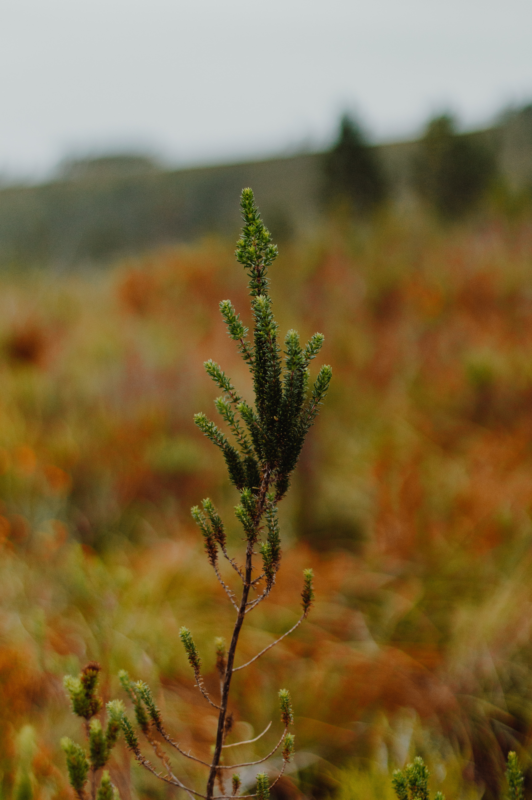

나는 무의식적으로 lifism을 무의식적으로 의식적으로 추구하고 있었다 단지 정의를 하지 않았을뿐이다. 내가 그린피스에 가입하여 후원하기 시작하고 비건에관한 책과 영상을 보며 식습관의 변화를 연습하며 소비에 대한, 나의 노동에대한 회의감과 미니멀리즘을 지향하게 된점, 제로웨이스트의 삶에 동경과 작은실천들... 모두 내가 자본에 맞서서 삶의 가치를 재정의 하는 방식이었다고 생각한다.
아직 부족하고 명확한 기준점이 없으며 자본에서 완전히 자유롭지 못하다 그럼에도 불구하고 나는 꾸준히 나만의 방식을 만들어가며 지켜갈생각이다. 나의 행동이 주변의 가족과 친구들에게 조금의 영향만 끼친다면 그거만으로도 충분하다. 나태해지지말고 나하쯤이라는 생각은 위험하다.